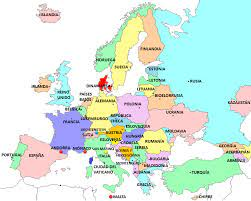
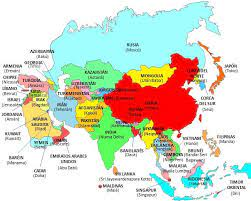
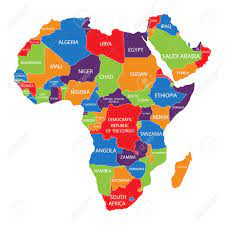
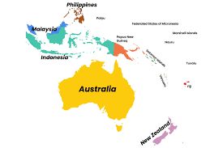
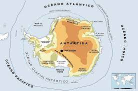

| CONTINENTES |
| América |
| Europa |
| Asia |
| África |
| Oceanía |
| Antártida |
- Canadá
- Belice
- Nicaragua
- Venezuela
- Chile
- Bulgaria
- Dinamarca
- Noruega
- Ucrania
- Irlanda
- Filipinas
- Alemania
- Birmana
- Malasia
- Vietnam
- Ghana
- Angola
- Zimbabue
- Uganda
- Kenia
- Fiyi
- Nauru
- Tonga
- Nueva Zelanda
- Palaos
- La Antártida Argentina (Argentina)
- La Dependencia Ross (Nueva Zelanda)
- Adalia Land (Francia)
- Territorio Antártico Australiano (Australia)
- Islandia Pedrolo Tierra de la reina Maud (Noruega)
- Antártida Chilena (Chile)
- Marya Byrd (sin pertenencia)

| 
| 
| 
| 
| 
| | | | | | |